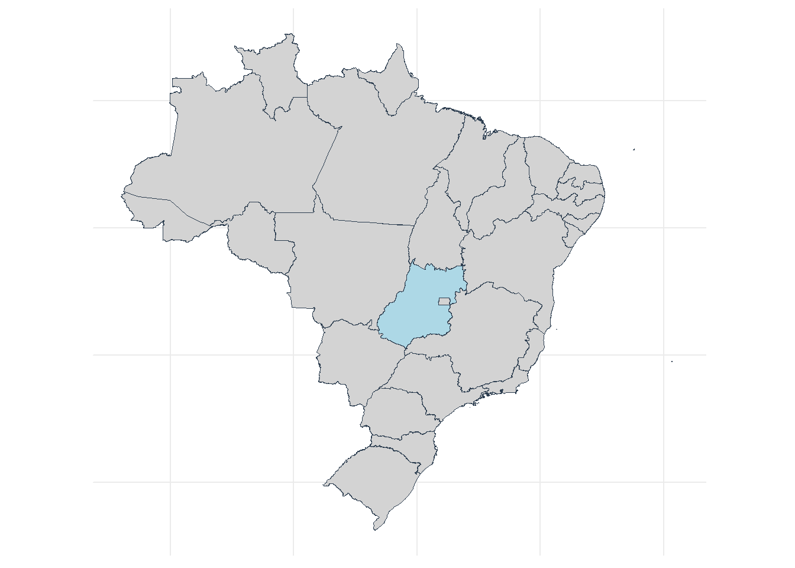

library(tidyverse)
library(readxl)
library(geojsonio)
library(broom)
library(jsonlite)
library(RODBC)
library(patchwork)
library(geobr)Needs-based health workforce planning for pregnancy care in Brazil
Introdução
Este material suplementar descreve os procedimentos metodológicos, assim como a documentação do código em linguagem R, usada para as análises. Foram seguidas as orientações de Asamani et al. (2021) de modo a construir um modelo de planejamento da força de trabalho em saúde para o cenário brasileiro.
Asamani et al. (2021) sugere um conjunto de seis considerações que pesquisadores devem seguir para desenvolver um planejamento baseado em necessidades de saúde, que são:
Definição de escopo - definição de uma cobertura jurisdicional, objetivo de sistema de saúde e horizonte temporal.
Análise da necessidade por servios e saúde - demografia populacional, status de saúde, programação de serviços.
Traduzindo os serviços necessários em força de trabalho - associando os serviços a categorias profissionais, elicitando medidas de carga de trabalho e produtividade.
Exploração de implicações em termos de recursos - comparando demanda e oferta e explorando implicações em termos de custos.
Condução de análise de sensibilidade - executar simulações de acordo com incertezas e de parâmetros e mudanças de cenários de políticas.
Condução de validação de modelo - comparar experiências prévias e consulta a stakeholders.
O fluxograma interativo abaixo apresenta as principais etapas.
Preparando o ambiente do R
Antes de fazer qualquer progresso, nós precisamos carregar as bibliotecas do R que serão necessárias para executar as análises.
1 - Definindo o escopo
A cobertura juridicional são as regiões de saúde de Goiás. Goiás é um estado localizado no centro-oeste do Brasil. O objetivo da análise foi planejar a força de trabalho de enfermagem e medicina para os cuidados de gestantes e recém-nascidos na atenção primária à saúde (APS). Nós empregamos a projeção da demanda para os dois anos subsequentes usando algoritmos de inteligência artificial.
A seguinte figura ilustra o estado de Goiás dentro do Brasil.
dataset <- list_geobr()
states <- read_state(
year=2019,
showProgress = FALSE
)
states <-
states |>
mutate(marcar = factor(if_else(abbrev_state == "GO", "1","2")))
# Removendo eixos do gráfico
no_axis <- theme(axis.title=element_blank(),
axis.text=element_blank(),
axis.ticks=element_blank())
# Plotando gráfico de Goiás
cores = c("lightblue","lightgray")
a <- states |>
ggplot() +
geom_sf(aes(fill=marcar), color="#2D3E50", size=.15, show.legend = FALSE) +
theme_minimal() +
scale_fill_manual(values = cores) +
no_axis
a
A seguinte figura representa cada região de saúde Goiás

2 - Análise sobre necessidades de saúde da população
Cada gestante e criança irão precisar de um conjunto de serviços durante e após o parto de acordo com recomendações do Ministério da Saúde.
\[ NHS\underset{r,t}{} = SD\underset{r,t}{} \times (H\underset{r,t}{} \times \sum_{t = -8}^{36}L\underset{y,t}{}) \tag{1}\]
where:
- \(NHS\underset{t}{}\) representa o total de serviços programáticos necessários para endereça cada status de saúde em uma região r em um período t.
- \(SD\) representa o percentual da população SUS dependenten em uma data região r e tempo t.
- \(H\underset{r,t}{}\) representa o status de saúde - nascimentos - para cada mês t e região r.
- \(L\) representa o número de serviços do tipo y necessários para cada gestante e criança em dado mês t, antes e depois do nascimento. O índice vai de -8 a 36, pois cada mês possui serviços programáticos dedicados para a gestante (de t = -8 até t = 1) e criança, começando do mês que ela nasce t = 0.
2.1. Status de saúde (H) e população SUS dependente (SD)
O bloco de código abaixo lê as bases e mostra a quantidade de nascidos para cada mês e região de saúde.
#reading and selecting variables
predictions <- read_excel("~/GitHub/dimensionamento/05_Gestantes/05_python/previsoes_go.xlsx") |>
select(codibge, data, qtd) |>
mutate(qtd = round(qtd))
# reading health insurance data
health_insurance <- read_csv("~/GitHub/dimensionamento/05_Gestantes/05_python/beneficiarios_plano_saude.csv") |>
filter(mes == "06") |>
mutate(perc_sus = (100 - percentual_pop_coberta)/100) |>
select(cod_regsaud, perc_sus, regiao_saude)
# joining both dataframes to deduce the population covered by health insurance
predictions <-
predictions |>
left_join(health_insurance, by = c("codibge"="cod_regsaud")) |>
mutate(qtd_sus = round(qtd * perc_sus)) |>
mutate(data = as.character(data))
glimpse(predictions)Rows: 649
Columns: 6
$ codibge <dbl> 52001, 52001, 52001, 52001, 52001, 52001, 52001, 52001, 5…
$ data <chr> "2022-12-01", "2023-01-01", "2023-02-01", "2023-03-01", "…
$ qtd <dbl> 2228, 2337, 2170, 2465, 2361, 2429, 2311, 2211, 2176, 227…
$ perc_sus <dbl> 0.5125, 0.5125, 0.5125, 0.5125, 0.5125, 0.5125, 0.5125, 0…
$ regiao_saude <chr> "Central", "Central", "Central", "Central", "Central", "C…
$ qtd_sus <dbl> 1142, 1198, 1112, 1263, 1210, 1245, 1184, 1133, 1115, 116…Número de nascidos mensalmente de acordo com a região de saúde.
predictions |>
mutate(data = ymd(data)) |>
ggplot(aes(x = data, y = qtd_sus)) + geom_line() +
facet_wrap(~regiao_saude, scales = "free",
ncol = 4) + theme_minimal()
2.2. Estimando serviços (S)
Para cada nascido, foi quantificado o número e tipo de serviços necessários para assistir gestantes e recém-nascidos no contexto da atenção primária.
Existe uma nota técnica que descreve o tipo de frequência de procedimentos que gestantes devem receber cada mês, antes e após o nascimento da criança.

O número e a variedade de procedimentos para cada gestante foi calculado usando uma API desenvolvida para a pesquisa. A API lê o número de nascidos em dada região de saúde (variável ibge) de acordo com a variável qtd_sus e calcula o número de procedimentos para cada mês, tanto para as gestantes quanto os recém-nascidos.
for(i in 1:nrow(predictions)){
row <- predictions[i,]
url = paste("http://200.137.215.27:5025/calcula_procedimentos?mes_ano=",
substring(row$data, 1, 7),
"&nascidos_vivos=",
round(row$qtd_sus, 0), sep = '')
temp <- fromJSON(url)
temp$data <- row$data
temp$qtd <- row$qtd_sus
temp$ibge <- row$codibge
servicos <- rbind(temp, servicos)
print(paste("Chamando:",url))
}Este dataframe contém 11 variáveis.
colnames(services) [1] "codigo_sigtap" "mes"
[3] "parametro" "procedimento"
[5] "tipo_procedimento" "Público"
[7] "nivel_atencao" "quantidade"
[9] "mês_procedimento_realizado" "data"
[11] "qtd" "ibge" onde:
ibge: código que identifica cada região de saúde
data: data do nascimento
qtd: número de nascimentos
procedimento: número de procedimentos do tipo y
mês_procedimento_realizado: mês que um procedimento do tipo y está programado para ser executado
codigo_sigtap: código usado no SUS para identificar um procedimento do tipo y
parametro: o número de procedimentos do tipo y que é necessário de acordo com dado mês (mes)
mes: mês de programação do procedimento, o qual varia entre -8 (segundo mês de gestação) e 36 (consulta da criança no 36th mês de vida). Zero representa o mês do nascimento.
tipo_procedimento: tipo de procedimento (consulta, vacina, exame, parto, ações educativas)
publico: público-alvo (gestante, recém-nascido, gestante de alto risco)
nivel_atencao: nível de atenção (atenção primária, atenção secundária)
Uma vez que o nosso objetivo é atenção primária, nós filtramos apenas os serviços executados neste nível de atenção.
# filter just PHC setting
phc_services <- services |>
filter(nivel_atencao == "APS")
glimpse(phc_services)Rows: 49,628
Columns: 12
$ codigo_sigtap <dbl> 301010110, 301010137, 202020355, 202020380,…
$ mes <dbl> -8, -7, -7, -7, -7, -7, -7, -7, -7, -7, -7,…
$ parametro <dbl> 1.0, 1.0, 1.0, 1.0, 0.5, 1.0, 1.0, 1.0, 1.0…
$ procedimento <chr> "Consulta pré-natal", "Visita domiciliar", …
$ tipo_procedimento <chr> "Consultas ou Visitas", "Consultas ou Visit…
$ Público <chr> "Todas gestantes", "Todas gestantes", "Toda…
$ nivel_atencao <chr> "APS", "APS", "APS", "APS", "APS", "APS", "…
$ quantidade <dbl> 1135.0, 1135.0, 1135.0, 1135.0, 567.5, 1135…
$ mês_procedimento_realizado <date> 2025-04-01, 2025-05-01, 2025-05-01, 2025-0…
$ data <date> 2025-12-01, 2025-12-01, 2025-12-01, 2025-1…
$ qtd <dbl> 1135, 1135, 1135, 1135, 1135, 1135, 1135, 1…
$ ibge <dbl> 52001, 52001, 52001, 52001, 52001, 52001, 5…3 - Traduzindo as necessidades por serviços em requisitos de força de trabalho
De acordo com Asamani et al. (2021), este passo inclui associar habilidades e competências com intervenções necessárias para elicitar as medidas de carga de trabalho, com base no Workload Indicator of Staffing Needs (WISN).
3.1. Associando habilidades e competências com as intervenções necessárias
O dataframe phc_services contém a variável codigo_sigtap. Esta variável representa um procedimento que irá ser usado para juntar com um segundo dataset que identifica qual profissional de saúde pode executar o procedimento.
# loading dataframe which combines procedures and the respective professional
procedures_professional <- read_excel("~/GitHub/dimensionamento/05_Gestantes/05_python/calendario-procedimentos.xlsx",
sheet = "procedimentos_profissionais") |>
select(codigo_sigtap, categoria, CBO) |>
mutate(codigo_sigtap =
as.numeric(codigo_sigtap)) Procedimentos executados por duas categorias são divididos de forma equitativa entre elas. Procedimentos executados por duas categorias profissionais são divididos de forma igual entre elas. Consulta pré-natal, por exemplo, pode ser executada tanto por enfermeiros quanto médicos. Portanto, 50% do volume vai alocado para cada profissional.
Mackenzie et al. (2019) introduzem o parâmetro W na equação de demanda para representar a proporção do serviço de dada categoria.
# the procedure 301010080 is growth and development consultation. It is divided by 10 because the same procedure id is used for all procedure.
qtt_professional <-
procedures_professional |>
group_by(codigo_sigtap) |>
count() |>
mutate(n = case_when(codigo_sigtap == '301010080' ~ n/10,
codigo_sigtap == '101010010' ~ n/2,
TRUE ~ n))
# In the following code:
# 1) filter for only procedures performed by nurses and physicians
# 2) calculate the number of procedures exclusive by cadre according to the last code
professional_services <- phc_services |>
left_join(qtt_professional,
by = "codigo_sigtap") |>
mutate(qtt_cadre = quantidade/n) |>
left_join(procedures_professional,
by = "codigo_sigtap") |>
filter(categoria == "Enfermeiro" |
categoria == "Médico")
glimpse(professional_services)Rows: 149,537
Columns: 16
$ codigo_sigtap <dbl> 301010110, 301010110, 202030300, 202030300,…
$ mes <dbl> -8, -8, -7, -7, -7, -7, -7, -7, -6, -6, -6,…
$ parametro <dbl> 1.0, 1.0, 1.0, 1.0, 1.0, 1.0, 1.0, 1.0, 1.0…
$ procedimento <chr> "Consulta pré-natal", "Consulta pré-natal",…
$ tipo_procedimento <chr> "Consultas ou Visitas", "Consultas ou Visit…
$ Público <chr> "Todas gestantes", "Todas gestantes", "Toda…
$ nivel_atencao <chr> "APS", "APS", "APS", "APS", "APS", "APS", "…
$ quantidade <dbl> 1135.0, 1135.0, 1135.0, 1135.0, 1135.0, 113…
$ mês_procedimento_realizado <date> 2025-04-01, 2025-04-01, 2025-05-01, 2025-0…
$ data <date> 2025-12-01, 2025-12-01, 2025-12-01, 2025-1…
$ qtd <dbl> 1135, 1135, 1135, 1135, 1135, 1135, 1135, 1…
$ ibge <dbl> 52001, 52001, 52001, 52001, 52001, 52001, 5…
$ n <dbl> 2, 2, 2, 2, 2, 2, 2, 2, 2, 2, 2, 2, 2, 2, 2…
$ qtt_cadre <dbl> 567.50, 567.50, 567.50, 567.50, 567.50, 567…
$ categoria <chr> "Enfermeiro", "Médico", "Enfermeiro", "Médi…
$ CBO <dbl> 223505, 225130, 223505, 225130, 223505, 225…O novo dataframe contém a variável qtt_cadre, categoria e CBO, onde:
qtt_cadre: total de procedimentos que pode ser executado por um profissional
categoria: profissionais de saúde que podem executar o número de procedimentos
CBO: o código brasileiro de ocupações que identifica uma categoria profissional
3.2. Elicitando medidas de carga de trabalho
O próximo passo envolve a definição do padrão de serviço (service standard - SS, em inglês) - tempo médio em horas que um profissional motivado e treinado toma para executar uma intervenção do tipo y. O tempo total disponível (TTD ou AWT, em inglês) é o tempo anual que um trabalhador tem disponível após a dedção de ausências. Uma vez que se tem os dois parâmetros, é possível calcular a carga de trabalho de serviço (service workload - SW, em inglês) que é definido como a carga de trabalho padrão exigido por um profissional da categoria n para executar um serviço y” (Asamani et al., 2021, p. 7).
\[ SW\underset{n,y}{} = \frac{AWT{n}{}}{SS{y,n}{}} \]
A equação de Asamani et al. (2021) foi adaptada para o presente estudo, mas sem prejuízo matemático. O apêndice A nós apresentamos cada passo para adaptar a fórmula original.
Depois de incluir ambos os elementos, a equação 1 é complementada conforme abaixo:
\[ N\underset{n,r,t}{} = \frac{SD\underset{r,t}{} \times (H\underset{r,t}{} \times \sum_{t = -8}^{36}(L\underset{y,t}{} \times SS\underset{y}{}))}{AWT\underset{n,t}{}} \]
where:
\(N\underset{n,r,t}{}\) representa os profissionais da categoria n, necessários em dada região r e período t.
\(SD\) representa o percentual da população SUS dependente em dada região de saúde r e período t.
\(H\underset{r,t}{}\) representa o status de saúde - nascidos - a cada mês t e região r.
\(L\underset{y,t}{}\) representa o número de serviços do tipo y necessários para cada gestante e criança em dado mês t, antes e depois do nascimento. O índice vai de -8 a 36, pois cada mês possui serviços programáticos dedicados para a gestante (de t = -8 até t = 1) e criança, começando do mês que ela nasce t = 0.
\(SS\underset{y}{}\) é o padrão de tempo de intervenção, em horas, executado por um profissional treinado e motivado. Nós usamos o tempo coletado em experiências prévias. Por meio de técnicas de time motion, Bonfim et al. (2014) registraram que uma consulta de enfermagem tomava, em média, 25,3 minutos (média Brasil) no contexto de atenção primária. Ações educativas tomaram cerca de 73 minutos. Nós utilizamos estes números como referência. Matsumoto (2018) identificou valores semelhantes para o contexto de atenção primária para médicos.
\(AWT\underset{n,t}{}\) é o tempo total disponível deduzidas as ausências. Originalmente essa métrica é mensurada em anos. Mas nós adaptamos para o padrão mensal. Nós utilizamos o AWT calculado por Bonfim (2014).
O próximo bloco de código traduz o volume de intervenções programáticas em horas necessárias por profissionais.
demand <- professional_services |>
filter(tipo_procedimento == "Consultas ou Visitas" |
tipo_procedimento == "Ações Educacionais") |>
mutate(ano = year(mês_procedimento_realizado)) |>
filter(ano == 2024) |>
mutate(tempo = if_else(
tipo_procedimento == "Consultas ou Visitas",
qtt_cadre * 0.66,
qtt_cadre * 1.266))
glimpse(demand)Rows: 37,192
Columns: 18
$ codigo_sigtap <dbl> 301010110, 301010110, 301010110, 301010110,…
$ mes <dbl> -8, -8, -8, -8, -8, -8, -8, -8, -8, -8, -8,…
$ parametro <dbl> 1, 1, 1, 1, 1, 1, 1, 1, 1, 1, 1, 1, 1, 1, 1…
$ procedimento <chr> "Consulta pré-natal", "Consulta pré-natal",…
$ tipo_procedimento <chr> "Consultas ou Visitas", "Consultas ou Visit…
$ Público <chr> "Todas gestantes", "Todas gestantes", "Toda…
$ nivel_atencao <chr> "APS", "APS", "APS", "APS", "APS", "APS", "…
$ quantidade <dbl> 1157, 1157, 229, 229, 105, 105, 120, 120, 1…
$ mês_procedimento_realizado <date> 2024-12-01, 2024-12-01, 2024-12-01, 2024-1…
$ data <date> 2025-08-01, 2025-08-01, 2025-08-01, 2025-0…
$ qtd <dbl> 1157, 1157, 229, 229, 105, 105, 120, 120, 1…
$ ibge <dbl> 52001, 52001, 52012, 52012, 52010, 52010, 5…
$ n <dbl> 2, 2, 2, 2, 2, 2, 2, 2, 2, 2, 2, 2, 2, 2, 2…
$ qtt_cadre <dbl> 578.5, 578.5, 114.5, 114.5, 52.5, 52.5, 60.…
$ categoria <chr> "Enfermeiro", "Médico", "Enfermeiro", "Médi…
$ CBO <dbl> 223505, 225130, 223505, 225130, 223505, 225…
$ ano <dbl> 2024, 2024, 2024, 2024, 2024, 2024, 2024, 2…
$ tempo <dbl> 381.81, 381.81, 75.57, 75.57, 34.65, 34.65,…O último passo consiste em traduzir as horas de profissionais em número de profissionais, por meio da métrica full-time equivalent (FTE). Nós dividimos o total de horas necessários por 126, que é o AWT para cada profissional por mês. Para mais informações sobre FTE, acesse o apêndice B deste script.
prof_demand <- demand |>
select(ano, mês_procedimento_realizado,
ibge, CBO, categoria, tempo) |>
mutate(fte40 = tempo/126) |>
group_by(ano, mês_procedimento_realizado,
ibge, CBO, categoria) |>
summarise(tempo_total = sum(tempo),
fte40_demanda = sum(fte40),
fte40_demanda = round(fte40_demanda, 2))
glimpse(prof_demand)Rows: 432
Columns: 7
Groups: ano, mês_procedimento_realizado, ibge, CBO [432]
$ ano <dbl> 2024, 2024, 2024, 2024, 2024, 2024, 2024, 2…
$ mês_procedimento_realizado <date> 2024-01-01, 2024-01-01, 2024-01-01, 2024-0…
$ ibge <dbl> 52001, 52001, 52002, 52002, 52003, 52003, 5…
$ CBO <dbl> 223505, 225130, 223505, 225130, 223505, 225…
$ categoria <chr> "Enfermeiro", "Médico", "Enfermeiro", "Médi…
$ tempo_total <dbl> 35383.681, 35383.681, 25772.305, 25772.305,…
$ fte40_demanda <dbl> 280.82, 280.82, 204.54, 204.54, 69.79, 69.7…Asamani et al. (2021) incorpora um último elemento que é a taxa de atividade indireta. Nós aplicamos este elemento no lado da oferta, de acordo com passos indicados por Mackenzie et al. (2019). Além disso, estes números representam o total de profissionais em FTE necessários para trabalhar apenas gestantes e recém-nascidos.
4 - Explorando as implicações em termos de recursos
Durante este passo, é comparada a demanda por profissionais, calculada nos passos prévios, e a oferta em dada região.
dremio_host <- Sys.getenv("endereco")
dremio_port <- Sys.getenv("port")
dremio_uid <- Sys.getenv("uid")
dremio_pwd <- Sys.getenv("datalake")
channel <- odbcDriverConnect(sprintf("DRIVER=Dremio Connector;
HOST=%s;PORT=%s;UID=%s;PWD=%s;
AUTHENTICATIONTYPE=Basic Authentication;CONNECTIONTYPE=Direct", dremio_host, dremio_port, dremio_uid, dremio_pwd))
consulta <- 'SELECT * FROM "Analytics Layer".Infraestrutura.Profissionais."Profissionais APS"'
oferta_GO <- sqlQuery(channel, consulta,
as.is = TRUE)Nós deduzimos a oferta a fim de considerar apenas a carga de trabalho dedicada à assistência de gestantes e recém-nascidos.
Nós usamos uma proxy do volume de atendimentos a gestantes e recém-nascidos na atenção primária, extraída do Sistema de Informações de Saúde da Atenção Básica (SISAB), para realizar um recorte do percentual do tempo dedicado a este tipo de atividade.
producao_SISAB <- read_excel("producao_SISAB.xls") |>
select(Cod_Regiao_Saude, Porcentagem)
producao_SISAB$Cod_Regiao_Saude = as.character(producao_SISAB$Cod_Regiao_Saude)4.1. Transformando dados sobre oferta
A fórmula da oferta pode ser deduzida a partir da equação abaixo e segue uma adaptação de Mackenzie et al. (2019).
\[ S\underset{n,r,t}{} = A\underset{n,r,t}{} \times D\underset{n,r,t}{} \times F\underset{n,r,t}{} \]
Onde:
\(A\underset{r,t}{}\): representa a oferta de profissionais atuantes em estabelecimentos de atenção primária, padronizados em FTE. Na base do Cadastro Nacional de Estabelecimentos de Saúde (CNES-PF) cada registro representa um vínculo. Portanto, um mesmo profissional pode aparecer múltiplas vezes. Para superar tal problema, foram somadas as cargas horárias. As cargas horárias estão registradas por padrão semanal enquanto os cálculos da demanda foram feitos para o padrão mensal. Portanto, foi necessário aplicar a oferta para o padrão mensal também. Isso foi feito, multiplicando-se a carga horária semanal por 4,345. Por fim, o valor resultante é dividido por 126h. Para mais detalhes destes procedimentos, acesse o apêndice C.
\(D\underset{n,r,t}{}\): representa o total de carga de trabalho dedicada a atividades diretas (assistência). Foi utilizada uma referência de 30% e 39% para enfermeiros e médicos, respectivamente, a partir de estudos prévios de Bonfim (2014) e Matsumoto (2017), para um cenário baseline. A simulação de cenários é aplicada em seguida.
\(F\underset{n,r,t}{}\): representa o percentual de tempo dedicado em atividades para assistência a gestantes e recém-nascidos.
oferta <- oferta_GO |>
mutate(cod_regsaud = as.character(cod_regsaud)) |>
mutate(ano_mes = ym(COMPETEN)) |>
mutate(horas = HORAOUTR + HORAHOSP + HORA_AMB) |>
mutate(prof = if_else(substr(CBO, 1, 4) == "2235",
"Enfermeiro", "Médico")) |>
group_by(uf, cod_regsaud, regiao_saude,
prof, ano_mes) |>
summarise(horas = 4.345 * sum(horas)) |>
left_join(producao_SISAB,
by = c("cod_regsaud"="Cod_Regiao_Saude")) |>
mutate(fte40 = horas/126) |>
mutate(direto = if_else(prof == "Enfermeiro",
fte40 * 0.30,
fte40 * 0.39)) |>
mutate(liquido = direto * Porcentagem) |>
mutate(ano_mes_corrigido = ano_mes + years(2)) |>
select(-ano_mes) |>
mutate(Porcentagem = round(Porcentagem, 2),
fte40 = round(fte40, 2),
direto = round(direto, 2),
liquido = round(liquido, 2))`summarise()` has grouped output by 'uf', 'cod_regsaud', 'regiao_saude',
'prof'. You can override using the `.groups` argument.DT::datatable(oferta)4.2. Comparando demanda e oferta
Nós comparamos demanda e oferta para cada região de saúde. A métrica result representa a subtração entre oferta e demanda (análise absoluta). A métrica perc representa quanto da oferta está disponível atualmente para atender a demanda em termos percentuais (análise relativa). Ambas as métricas são recomendadas por Asamani et al. (2021).
prof_demand$ibge <- as.character(prof_demand$ibge)
demanda_oferta <-
prof_demand |>
left_join(oferta, by = c("ibge"="cod_regsaud","categoria"="prof",
"mês_procedimento_realizado"="ano_mes_corrigido")) |>
filter(uf != "NA") |>
mutate(ano = year(mês_procedimento_realizado)) |>
mutate(resultado = liquido - fte40_demanda) |>
group_by(ibge, ano, categoria,
uf, regiao_saude) |>
summarise(resultado = sum(resultado),
demanda = sum(fte40_demanda),
oferta = sum(liquido))`summarise()` has grouped output by 'ibge', 'ano', 'categoria', 'uf'. You can
override using the `.groups` argument.demanda_oferta |>
select(-resultado) |>
gather(key = "demand_supply",
value = "resultado",
6:7) |>
mutate(categoria = if_else(categoria == "Enfermeiro",
"Nurse","Physician"),
demand_supply = if_else(demand_supply == "demanda",
"Demand","Supply")) |>
ggplot(aes(x = fct_reorder(regiao_saude,resultado),
y = resultado, fill = demand_supply)) +
geom_col(position = "dodge") + coord_flip() +
facet_wrap(~categoria) +
theme_minimal() + xlab("Region") + ylab("Demand vs Supply") +
theme(legend.title= element_blank())prof_demand$ibge <- as.character(prof_demand$ibge)
demanda_oferta <-
prof_demand |>
left_join(oferta, by = c("ibge"="cod_regsaud",
"categoria"="prof",
"mês_procedimento_realizado"="ano_mes_corrigido")) |>
filter(uf != "NA") |>
mutate(ano = year(mês_procedimento_realizado)) |>
mutate(resultado = liquido - fte40_demanda) |>
group_by(ibge, ano, categoria,
uf, regiao_saude) |>
summarise(resultado = sum(resultado),
demanda = sum(fte40_demanda),
oferta = sum(liquido)) |>
mutate(resultado = round(resultado, 2)) |>
filter(ano == '2024') |>
mutate(percentage = (oferta * 100)/demanda,
percentage = round(percentage, 2)) |>
mutate(id = as.integer(ibge)) |>
ungroup() |>
select(id, regiao_saude, categoria,
resultado, percentage)`summarise()` has grouped output by 'ibge', 'ano', 'categoria', 'uf'. You can
override using the `.groups` argument.DT::datatable(demanda_oferta)O mapa abaixo apresenta os resultados de acordo com a distribuição pelo mapa.
spdf <- geojson_read("shape file regioes saude.json", what = "sp")demanda_oferta$id <- as.integer(demanda_oferta$id)
spdf_region <- spdf[ spdf@data$est_id == "52" , ]
spdf_fortified <- sf::st_as_sf(spdf_region)
spdf_fortified |>
left_join(demanda_oferta, by = c("reg_id"="id")) |>
mutate(categoria = if_else(categoria == "Médico","Physician","Nurse")) |>
ggplot() +
geom_sf(aes(fill = percentage)) +
geom_sf_text(aes(label = regiao_saude), size = 2.5) +
theme_minimal() +
scale_fill_gradient(low = "#F8766D", high = "#00BA38", n.breaks = 10) +
facet_wrap(~categoria, nrow = 1) +
theme(
axis.line = element_blank(),
axis.text.x = element_blank(),
axis.text.y = element_blank(),
axis.ticks = element_blank(),
axis.title.x = element_blank(),
axis.title.y = element_blank()
) + ggtitle("Supply vs Demand", "Nurses and Physician for Maternal and Newborn Assistance in the Primary Health Care Context")5 - Análise de sensibilidade
Construção de uma função para calcular cenários.
funcao_demanda_oferta <-
function(tempo1, tempo2,
perc_direto1, perc_direto2)
{
professional_services_2 <-
phc_services %>%
left_join(qtt_professional,
by = "codigo_sigtap",
suffix = c("_phc", "_qtt")) %>%
mutate(qtt_cadre = quantidade / n) %>%
left_join(procedures_professional,
by = "codigo_sigtap",
suffix = c("_phc", "_procedures")) %>%
filter(categoria == "Enfermeiro" |
categoria == "Médico") %>%
filter(tipo_procedimento == "Consultas ou Visitas" |
tipo_procedimento == "Ações Educacionais") %>%
mutate(ano = year(mês_procedimento_realizado)) %>%
filter(ano == 2024) %>%
mutate(tempo =
if_else(
tipo_procedimento == "Consultas ou Visitas",
qtt_cadre * tempo1, # 20 minutos
qtt_cadre * tempo2
)
)
demanda_2 <-
professional_services_2 %>%
select(ano, mês_procedimento_realizado,
ibge, CBO, categoria, tempo) %>%
mutate(fte40 = tempo / 126) %>%
group_by(ano, mês_procedimento_realizado,
ibge, CBO, categoria) %>%
summarise(
tempo_total = sum(tempo),
fte40_demanda = sum(fte40),
fte40_demanda = round(fte40_demanda, 2)
)
oferta_2 <-
oferta_GO %>%
mutate(cod_regsaud = as.character(cod_regsaud)) %>%
mutate(ano_mes = ym(COMPETEN)) %>%
mutate(horas = HORAOUTR + HORAHOSP + HORA_AMB) %>%
mutate(prof = if_else(substr(CBO, 1, 4) == "2235",
"Enfermeiro", "Médico")) %>%
group_by(uf, cod_regsaud, regiao_saude,
prof, ano_mes) %>%
summarise(horas = 4.345 * sum(horas)) %>%
left_join(producao_SISAB,
by = c("cod_regsaud" = "Cod_Regiao_Saude")) %>%
mutate(fte40 = horas / 126) %>%
mutate(direto = if_else(prof == "Enfermeiro",
fte40 * perc_direto1,
fte40 * perc_direto2)) %>%
mutate(liquido = direto * Porcentagem) %>%
mutate(ano_mes_corrigido = ano_mes + years(2)) %>%
select(-ano_mes) %>%
mutate(
Porcentagem = round(Porcentagem, 2),
fte40 = round(fte40, 2),
direto = round(direto, 2),
liquido = round(liquido, 2)
)
demanda_2$ibge <- as.character(demanda_2$ibge)
demanda_oferta_2 <- demanda_2 %>%
left_join(oferta_2,
by = c("ibge" = "cod_regsaud",
"categoria" = "prof",
"mês_procedimento_realizado" =
"ano_mes_corrigido"),
suffix = c("_demanda", "_oferta")) %>%
filter(uf != "NA") %>%
mutate(ano = year(mês_procedimento_realizado)) %>%
mutate(resultado = liquido - fte40_demanda) %>%
group_by(ibge, ano, categoria,
uf, regiao_saude) %>%
summarise(
resultado = sum(resultado),
demanda = sum(fte40_demanda),
oferta = sum(liquido)
)
return(demanda_oferta_2)
}1 - Baseline cenário
baseline <- demanda_oferta |>
mutate(cenario = "baseline")
cenario_1_go <-
baseline |>
group_by(categoria, cenario) |>
summarise(resultado = sum(resultado))
cenario_1_go# A tibble: 2 × 3
# Groups: categoria [2]
categoria cenario resultado
<chr> <chr> <dbl>
1 Enfermeiro baseline -13103.
2 Médico baseline -11959.2 - Cenário 2 - Aumento de Atividades Diretas
Aumento de 10% das atividades diretas
cenario_2 <-
funcao_demanda_oferta(0.50, 1.00,
0.30, 0.39) |>
mutate(percentage = (oferta * 100)/demanda,
percentage = round(percentage, 2)) |>
mutate(id = as.integer(ibge)) |>
select(id, regiao_saude, categoria,
resultado, percentage)
DT::datatable(cenario_2)cenario_2_go <-
cenario_2 |>
mutate(cenario = "scenario 2") |>
group_by(categoria, cenario) |>
summarise(resultado = sum(resultado))
cenario_2_go# A tibble: 2 × 3
# Groups: categoria [2]
categoria cenario resultado
<chr> <chr> <dbl>
1 Enfermeiro scenario 2 -8767.
2 Médico scenario 2 -7623.3 - Cenário 3 - Aumento de Atividades Diretas
Aumento de 20% das atividades diretas
cenario_3 <-
funcao_demanda_oferta(0.66, 1.26,
0.40, 0.49) |>
mutate(percentage = (oferta * 100)/demanda,
percentage = round(percentage, 2)) |>
mutate(id = as.integer(ibge)) |>
select(id, regiao_saude, categoria,
resultado, percentage)
DT::datatable(cenario_3)cenario_3_go <-
cenario_3 |>
mutate(cenario = "scenario 3") |>
group_by(categoria, cenario) |>
summarise(resultado = sum(resultado))
cenario_3_go# A tibble: 2 × 3
# Groups: categoria [2]
categoria cenario resultado
<chr> <chr> <dbl>
1 Enfermeiro scenario 3 -11507.
2 Médico scenario 3 -10438.4 - Cenário 4 - Aumento de atividades diretas
Aumento de 30% das atividades diretas
cenario_4 <-
funcao_demanda_oferta(0.50, 1.00,
0.50, 0.59) |>
mutate(percentage = (oferta * 100)/demanda,
percentage = round(percentage, 2)) |>
mutate(id = as.integer(ibge)) |>
select(id, regiao_saude, categoria,
resultado, percentage)
DT::datatable(cenario_4)cenario_4_go <-
cenario_4 |>
mutate(cenario = "scenario 4") |>
group_by(categoria, cenario) |>
summarise(resultado = sum(resultado))
cenario_4_go# A tibble: 2 × 3
# Groups: categoria [2]
categoria cenario resultado
<chr> <chr> <dbl>
1 Enfermeiro scenario 4 -5575.
2 Médico scenario 4 -4581.5 - Cenário 5 - Aumento de Atividades Diretas
Aumento de 40% das atividades diretas
cenario_5 <- funcao_demanda_oferta(0.50, 1.00,
0.60, 0.69) |>
mutate(percentage = (oferta * 100)/demanda,
percentage = round(percentage, 2)) |>
mutate(id = as.integer(ibge)) |>
select(id, regiao_saude, categoria,
resultado, percentage)
DT::datatable(cenario_5)cenario_5_go <-
cenario_5 |>
mutate(cenario = "scenario 5") |>
group_by(categoria, cenario) |>
summarise(resultado = sum(resultado))
cenario_5_go# A tibble: 2 × 3
# Groups: categoria [2]
categoria cenario resultado
<chr> <chr> <dbl>
1 Enfermeiro scenario 5 -3979.
2 Médico scenario 5 -3060.Mapa do cenário 5
Ilustração do mapa no cenário 5.
spdf <- geojson_read("shape file regioes saude.json", what = "sp")cenario_5$id <- as.integer(cenario_5$id)
spdf_region <- spdf[ spdf@data$est_id == "52" , ]
spdf_fortified <- sf::st_as_sf(spdf_region)
x <- spdf_fortified |>
left_join(cenario_5, by = c("reg_id"="id")) |>
mutate(categoria = if_else(categoria == "Médico","Physician","Nurse")) |>
ggplot() +
geom_sf(aes(fill = percentage)) +
geom_sf_text(aes(label = regiao_saude), size = 3.5) +
theme_minimal() +
scale_fill_gradient(low = "#F8766D", high = "#00BA38", n.breaks = 10) +
facet_wrap(~categoria, nrow = 1) +
theme(
axis.line = element_blank(),
axis.text.x = element_blank(),
axis.text.y = element_blank(),
axis.ticks = element_blank(),
axis.title.x = element_blank(),
axis.title.y = element_blank()
) + ggtitle("Scenario 5")
xAnálise de todos os cenários
cenarios <- rbind(cenario_1_go,
cenario_2_go,
cenario_3_go,
cenario_4_go,
cenario_5_go)
cenarios |>
mutate(resultado = round(resultado)) |>
ggplot(aes(x = cenario, y = resultado,
fill = categoria)) +
geom_col(position = "dodge") +
geom_text(aes(label = resultado),
vjust = 1, position = position_dodge(width = 1)) +
theme(legend.position="top") +
theme_minimal() + xlab("Scenario") + ylab("Result") +
theme(text = element_text(size = 20)) +
theme(axis.text.x = element_text(angle = 90)) +
theme(axis.text.x = element_blank())Análises que podem contribuir para discussão
cobertura <- read_delim("cobertura.csv",
delim = ";", escape_double = FALSE, trim_ws = TRUE)cobertura_demanda_oferta <-
cobertura |>
select(CO_CIR, NO_REGIAO_SAUDE, PC_COBERTURA_AB, PC_COBERTURA_SF) |>
left_join(demanda_oferta, by = c("CO_CIR"="id"))cobertura_demanda_oferta |>
filter(categoria == "Enfermeiro") |>
ggplot(aes(PC_COBERTURA_AB, percentage)) + geom_smooth(method = 'lm', se = FALSE) +
geom_label(aes(label = NO_REGIAO_SAUDE)) + theme_minimal()cobertura_demanda_oferta |>
filter(categoria == "Médico") |>
ggplot(aes(PC_COBERTURA_AB, percentage)) + geom_smooth(method = 'lm', se = FALSE) +
geom_label(aes(label = NO_REGIAO_SAUDE)) + theme_minimal() ##Human Development Index
hierarquia_municipios <- read_excel("hierarquia_municipios.xlsx",
col_types = c("text", "text", "numeric",
"text", "text", "text", "numeric",
"text", "text", "numeric", "text",
"text", "text", "numeric", "text",
"text", "numeric", "numeric"))
idh <- read_delim("idh.csv", delim = ";",
escape_double = FALSE, col_types = cols(cod_ibge = col_character()),
trim_ws = TRUE) |>
mutate(ibge = substr(cod_ibge, 1, 6)) |>
left_join(hierarquia_municipios, by = c("ibge"="cod_municipio")) |>
group_by(cod_regsaud) |>
summarise(idh_medio = mean(idh_2010))
demanda_oferta |>
left_join(idh, by = c("id"="cod_regsaud")) |>
ggplot(aes(x = idh_medio, y = percentage)) +
geom_label(aes(label = regiao_saude)) +
geom_smooth(method = "lm", se = FALSE ) + facet_wrap(~categoria)`geom_smooth()` using formula = 'y ~ x'
Apêndice A - FTE
FTE é uma métrica muito presente nos estudos de planejamento e dimensionamento da força de trabalho em saúde e recursos humanos que tem como objetivo padronizar o número de profissionais considerando a carga horária.
Considere que, ao calcular a demanda, sejam necessárias 3200 horas de enfermeiros em dados mês para atender todos serviços necessários. Traduzindo em número de profissionais, tem-se:
\(3200\div126 = 25.39\)
Ou seja, dado que a carga horária de um profissionais em tempo integral - depois de deduzidas ausências - é de 126h, precisaríamos de 25 profissionais de 40h e um profissional de 16h (referente ao 0,39).
A métrica também pode ser usada para padronizar a oferta. Considerando o seguinte tabela com profissionais. Quantos enfermeiros existem? De imediato, pode-se pensar em três enfermeiros. Porém, eles possuem cargas horárias diferentes. Como padronizar isso?
| Nome da Profissional | Categoria Profissional | Carga horária |
|---|---|---|
| Maria | Enfermeiro | 35 |
| João | Enfermeiro | 25 |
| Daiane | Enfermeiro | 40 |
\(Enfermagem = 35 + 25 + 40 => 100\space horas \space semanais\)
\(Enfermagem = 100 \times 4.345 => 434.5\space horas \space mensais\)
\(Enfermagem = 434.5 \div 126 => 3.44\space profissionais\)
Observa-se que temos 3.44 profissionais de enfermagem em equivalente tempo integral (full-time equivalent).